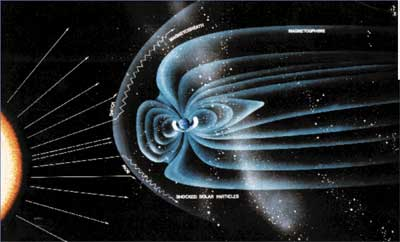
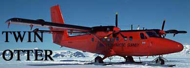

|  The Antarctic plateau is a unique location to study the upper atmosphere at high magnetic latitudes, providing a stable environment for sensitive instruments that measure the interaction between the solar wind and the Earth's magnetosphere, ionosphere, and thermosphere. Existing stations on the edge of the continent and at South Pole, and six low-power (50 W) Automatic Geophysical Observatories, demonstrate the value of distributed ground-based observation of solar-terrestrial physics. Increasing the spatial density of these observations offers great scientific opportunities. The National Research Council emphasized the need for mobile instrument networks in 2002 in their long-term planning document "The Sun to the Earth and Beyond" by recommending "comprehensive new approaches to the design and maintenance of ground-based, distributed instrument networks, with proper regard for the severe environments in which they must operate." Our research task is the design and fabrication of a lightweight mobile robot that enables deployment of instrument networks in Antarctica. One can envision deploying multiple robots from the South Pole to desired locations on the plateau for long- or short-term observation, and retrieving or repositioning the robot network through Iridium-based communication. Potential missions include deploying arrays of magnetometers, seismometers, radio receivers and meteorological instruments, measuring ionosphere disturbances through synchronization of GPS signals, using ground-penetrating radar (GPR) to survey crevasse-free routes for field parties or traverse teams, and conducting glaciological surveys with GPR. Robot arrays could also provide high-bandwidth communications links and mobile power systems for field scientists.  Remote observatory deployment on the Antarctic plateau via C-160 transport aircraft and small Twin Otter aircraft is expensive and entails hazards at remote takeoff and landing sites. For large-scale and widely distributed (>500 km radius) networks, relatively low-cost mobile robots can reduce per-instrument deployment and retrieval costs, in economic as well as environmental terms, as well as reduce the risk to humans and equipment. Semi-autonomous network deployment would free limited aircraft and human resources for other missions. The harsh weather of Polar environments, range requirements, navigation issues and variable terrain pose significant design challenges for inexpensive unmanned vehicles. Instruments will be deployed for long periods in drifting snow and must have a stable environment with low vibration and electromagnetic noise. Robots and deployed sensors should be retrievable with high reliability to minimize environmental impact and cost. This website provides a summary of the robotics related research, including modeling, design, and fabrication concepts used to develop this cost-effective mobile platform. |
||
| Mission Page: [1] | [2] | [3] | [4] | ||
| [Main] | [Mission] | [Science] | [Papers] | [Pictures] | [Team] |
|
Site © Thayer School of Engineering, Dartmouth College, Hanover, N.H. |